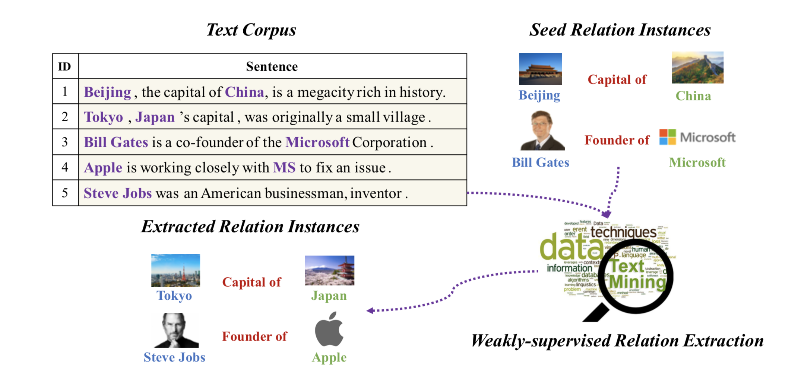
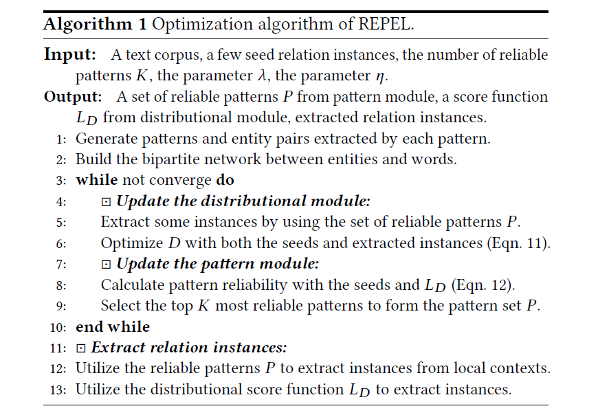

这次主要阅读的论文是《Overcoming Limited Supervision in Relation Extraction: A Pattern-enhanced Distributional Representation Approach》[1]。该文主要针对了现有模型对标注数据的依赖，提出一种比较有意思的思路。基于分布的方法（distributional approach）利用两个实体共同出现的统计频率来预测他们的关系，需要大量标注数据，而基于模式的方法（pattern-based approach）一般使用神经网络建模，但这种方法需要更多的标注数据。本文同时建立两个模型，互相为对方提供监督。以分布模型作为判别模型，模式模型作为生成模型。训练过程中不断迭代，从而提升两个模型的性能。

1. Introduction
1.1 Weakly Supervised Learning
弱监督学习介于监督学习和无监督学习之间，它提供的标注数据带有较大的噪音，或标注的相对粗糙，标注结果可能出错。对于关系抽取而言，就是将一些关系实例作为seed，用它们从大型语料库中去除冗余信息并提取更多的实例。
弱监督学习的基本思路：
- 用容易获得的标注替代较难获得的标注
- 选择最需要做精细标注的样例
- 模型训练和自动标注交替进行
1.2 Co-training strategy
以往的工作主要是单个模型，该文采用了co-training策略[2]，将两个模型互相协作，取得了比较好的效果。
co-training策略是一种半监督方法，核心就是利用少量已标记样本，通过两个（或多个）模型去学习，对未标记样本进行标记，挑选置信度最高的样本加入已标记样本阵营。
1.3 REPEL (Relation Extraction with pattern-enhanced Embedding)
REPEL是本文提出的一个模型。基于模式的模型学习用于关系抽取文本的模式，基于分布的模型作为分类器，两者互补，互相提供监督。前者相当于一个生成器，基于模式生成候选实例；而后者作为判别器，从中选择最优实例，并将选择结果反馈给前者。训练完成相当于得到了两个关系抽取模型。
2. Problem definition
实体识别：使用现成的工具标注。
关系识别：实体对 $(e_h, e_t)$，三元组$(e_h, e_t, r)$
给定语料库D，关系集合R。给定少量seed实例$ {(eh^{r(k)}, e_t^{r(k)}, r)} {k=1}^{Nr} $，提取尽可能多的$ {(e_h^{r(i)}, e_t^{r(i)}, r)} {i=1}^M $；换言之，对于每个$ r \in R $，我们要提取尽可能多的$ {(eh^{r(i)}, e_t^{r(i)})} {i=1}^{M_r} $。
3. REPEL Framework
模式模型：找到文本中的模式集合
分布模型：学习实体表示，以及打分函数
目标函数：
上面公式中，P表示模式模型的参数，给定关系的全部模式集合。D表示分布模型的参数，实体表示和打分函数。Op和Od分别表示两个目标函数，Oi表示两个模型交互的目标。
注意这里只考虑关系抽取，实体识别使用现有的工具或模型。
3.1 Pattern Module
对于一个指定的关系r，我们的目标是找到K个最可靠的模式，然后进一步使用它们来发现更多的关系实例。
基于模式关系抽取主要分为两种：path-based pattern、meta pattern。对于一句话中的实体对，前者定义为两个实体通过依存信息跳转的最短路径；后者则是两个实体附近的文字序列。利用这两种模式从语料库中寻找匹配的实体对。这样就得到了很多候选模式，每个模式又能分别找到许多匹配的实体对。
对于一个模式$\pi$，我们通过以下式子计算它的置信度：
$G(\pi)$表示被模式$\pi$所匹配的所有实体对，$S_{pair}$表示seed实体对。可以看到，R实际表示的是，在满足$\pi$模式的实体对中，seed实体对所占的比例。显然，该比值越高，该模式越符合seed的分布。由此，我们定义：
下面说明一下整个进行的过程：
- 给定seed实体对，我们通过模式关系抽取的方法获得一系列候选模式。
- 计算每个候选模式的R值，取最高的K个
3.2 Distributional Module
该模块学习语料中的实体全局分布信息。我们利用给定的关系实例作为打分函数。
对于一个实体e，和一个词w
$x_e$表示需要训练的实体表示向量， $c_w$是预训练的word embedding，Z是归一化项。
$n_{w,e}$是字与实体之间边的权重，也就是实体和这个字同时出现的统计频率。我们希望分布概率能够拟合经验分布概率。
定义打分函数：
实体向量$(x{e_h} - x{e_t})$和$y_r$（关系r的表示，也是要学习的参数）越接近，$L_D$就越接近1；反之则会非常小。
$(e’_h,e’_t)$是随机选取的实体对。最小值函数是为了防止两个分数差距太多，因为往往$L_D(f’|r)$会是一个很小的负数。
最后有总目标函数中的Od：
$\eta$用于调整两部分的比值。
3.3 Modeling the Module Interaction
这里E指的是期望。
我们给模式模型生成的实体对也打分。Oi作为目标函数，为了最大化它，模式集合P应该尽可能包含那些可靠有效的模式。也就是说，模式模型生成的实体对应该得到的打分越大越好。这样一来分布模型就能为模式模型提供监督（打分）。并且，对于分布模型来说，最大化该目标函数能够给实体对分配更高的打分（也就是说，要令Oi最大化，G(P)和LD都要合适）。通过这种方式两个模型能够互相提供监督。
4. The Joint Optimization Problem

具体算法如上图原文，为了优化总目标函数，采用协梯度下降算法。
先固定模式模型，将seed实体对$S_{pair}$和模式模型生成的实体对$G(P)$训练分布模型。图中的Eqn.11就是下式：
然后再固定分布模型，对实体对筛选后得到的$S_{pair}$训练模式模型。图中的Eqn.12就是下式：
往复迭代。
5. Conclusion
利用两个模型进行互补的思路很新颖，从论文的测试结果上来看，本文提出的模型并不逊色于神经网络，可见两个模型互补的效果是相当不错的。但是这种弱监督学习需要的人工标注数据非常少，降低了对标注数据的依赖性。
Reference
*笔记部分参考https://zhuanlan.zhihu.com/p/32364723
[1] Qu, M., Ren, X., Zhang, Y., & Han, J. (2017). Overcoming Limited Supervision in Relation Extraction: A Pattern-enhanced Distributional Representation Approach. arXiv preprint arXiv:1711.03226.
[2] Blum, Avrim, and Tom Mitchell. “Combining labeled and unlabeled data with co-training.” Proceedings of the eleventh annual conference on Computational learning theory. ACM, 1998.